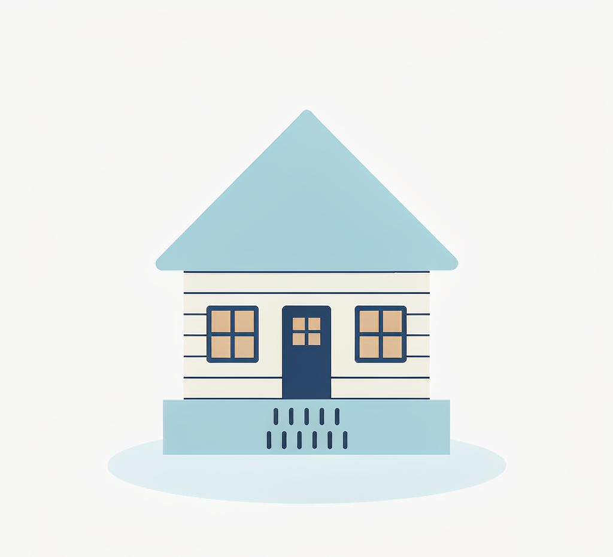
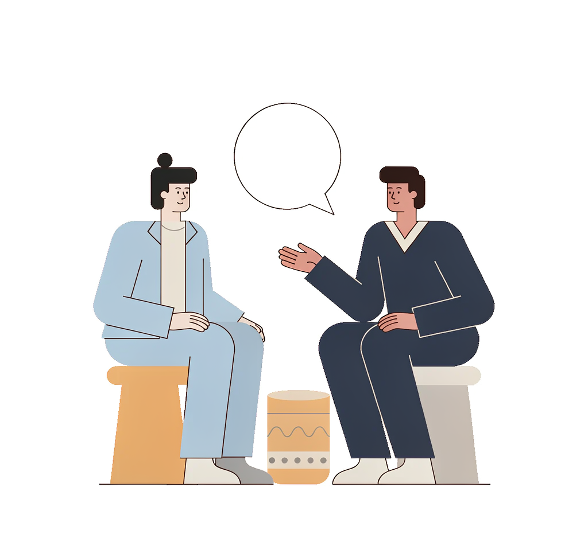

A1–C2 分级 · 每个义项配一幅图 · 名词显示词干与基本格 · 动词显示 6 种类型

talo
房子；房屋 · house
基本格 · A1（6 个）
| 格 | 形式 | 后缀 | 词干 |
|---|---|---|---|
| 主格 nominatiivi | talo | — | 强 |
| 属格 genetiivi | talon | -n | 弱 |
| 部分格 partitiivi | taloa | -a | 强 |
| 内格 inessiivi | talossa | -ssa | 弱 |
| 出格 elatiivi | talosta | -sta | 弱 |
| 入格 illatiivi | taloon | -Vn | 强 |
插画：generated / own · 已裁掉平台水印 · 中文释义待人工校对
kauppa
商店；店铺 · shop, store
基本格 · A1（6 个）
| 格 | 形式 | 后缀 | 词干 |
|---|---|---|---|
| 主格 nominatiivi | kauppa | — | 强 |
| 属格 genetiivi | kaupan | -n | 弱 |
| 部分格 partitiivi | kauppaa | -a | 强 |
| 内格 inessiivi | kaupassa | -ssa | 弱 |
| 出格 elatiivi | kaupasta | -sta | 弱 |
| 入格 illatiivi | kauppaan | -Vn | 强 |
只存 lemma 生成不出 kaupassa —— 强弱词干是必需字段

puhua
说；讲话 · to speak
动词不显示格表，改为「类型 + 变位」卡；情境图用于动作类词，而非物件图
tarvita
需要 · to need
未配图时显示占位卡，不影响学习；alt 文本已预置，游戏模式下隐藏图片避免露答案
| 类型 | 不定式词尾 | 现在时词干规则 | 例词 | Kotus |
|---|---|---|---|---|
| 1 | 元音 + -a/-ä | 去掉词尾 -a/-ä | puhua → puhu- → puhun | 52 |
| 2 | -da/-dä | 去掉 -da/-dä | syödä → syö- → syön | 64 |
| 3 | 辅音 + -la/-na/-ra/-sta | 去词尾，加 -e- | tulla → tule- → tulen | 67 |
| 4 | 元音 + -ta/-tä | 去 -ta/-tä，加 -a/-ä- | haluta → halua- → haluan | 73 |
| 5 | -ita/-itä | 去 -ta/-tä，加 -itse- | tarvita → tarvitse- → tarvitsen | 69 |
| 6 | -eta/-etä | 去 -ta/-tä，加 -ne- | vanheta → vanhene- → vanhenen | 72 |
教学上的 6 类给用户看；Kotus 27 个变位类（编号 52–78）给词形生成器用。上一轮更正的 78 类 = 51 名词变格类 + 27 动词变位类。不规则动词 olla 单独标 irregular。